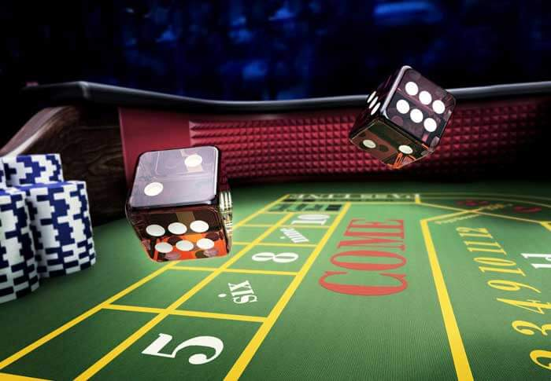
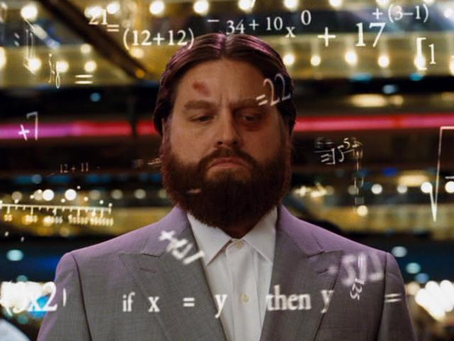

Desarrollar un juego de dados a elección. La definición del objetivo y del funcionamiento del juego son a elección. Deberá ser un juego de complejidad media o alta que requiera para su resolución el uso de todas las estructuras estudiadas hasta el momento (condicionales, repetitivas, funciones y arrays). En la página deberán estar escritas las reglas del juego. La complejidad del juego se establece en función de la cantidad de jugadores, el uso de turnos o rondas, el cálculo de puntaje, la definición de ganadores y perdedores, entre otros.

Desarrollar un juego de preguntas a elección. La definición del objetivo y del funcionamiento del juego son a elección. Deberá ser un juego de complejidad baja o media que requiera para su resolución el uso de todas las estructuras estudiadas hasta el momento (condicionales, repetitivas, funciones y arrays). En la página deberán estar escritas las reglas del juego. La complejidad del juego se establece en función de la cantidad de jugadores, preguntas y opciones, el uso de turnos o rondas o niveles, el cálculo de puntaje, la definición de ganadores y perdedores, entre otros.
